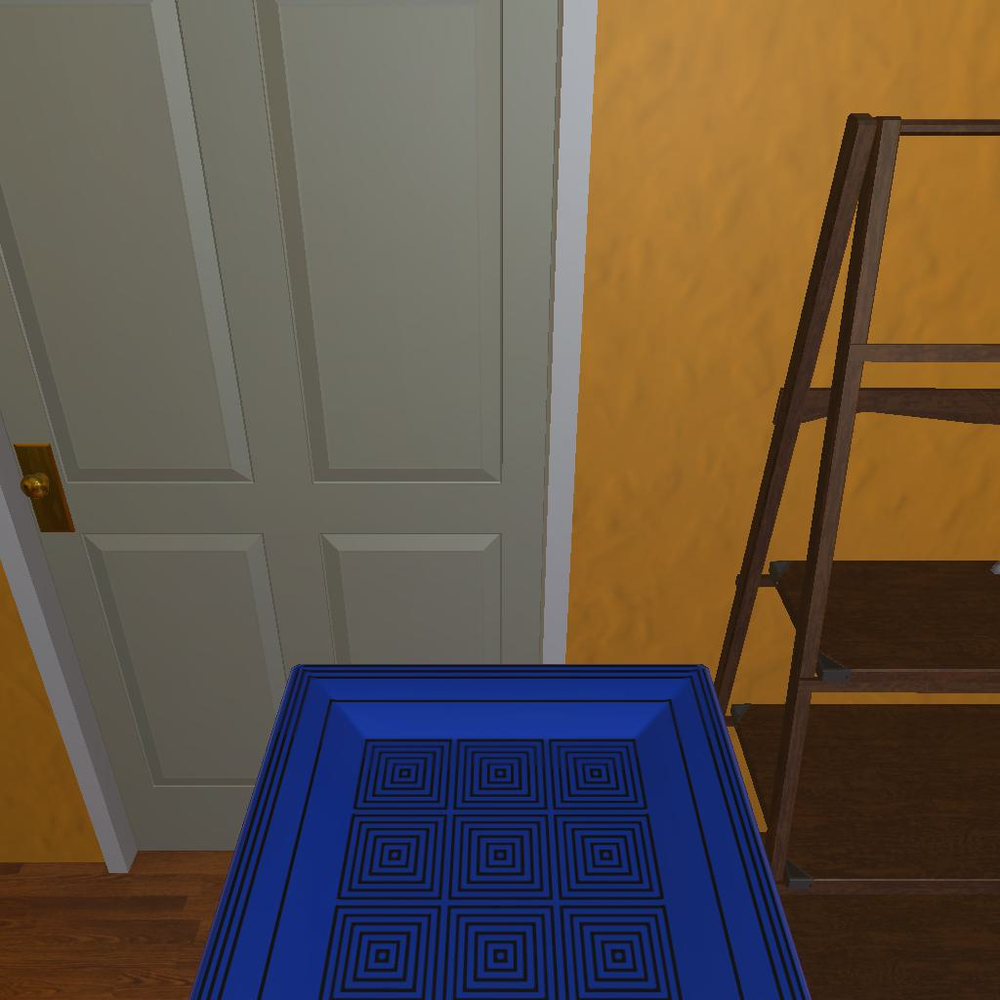

---------------------------------------------------------task: 3---------------------------------------------------------
--------------------------------------------------------------------------------------------------------------------------------------------------------------------
--------------------------------------------------------------------------------------------------------------------------------------------------------------------
Step:--------------------------------------------------------------------------11-------------------------------------------------------------------------------
----------------------------------------
VLM Prompt:
Image1:
**Instruction**
1. Analyze the provided image to identify all visible household objects, focusing on those relevant to the task description "look at plate under the floorlamp."
2. Use the analysis of the image and the task hint "The agent must find an object of the desired type, locate and turn on a light source with the desired object in-hand." to answer the question: what is the most reasonable action in the choices for the task description "look at plate under the floorlamp"?
4. Decide and write the answer using the template: The answer is: (i): , where i is the real number. If there is no desired object in the image, search every place based on **Initial Observation** to find the object. And if no one is exactly correct, choose a similar answer.
**Initial Observation**
You are in the middle of a room. Looking quickly around you, you can see armchair (1), garbagecan (1), tvstand (1), shelf (1-5), sofa (1), coffeetable (1), sidetable (1-2), drawer (1)
**Answer Choices**
(1): go to armchair 1
(2): go to garbagecan 1
(3): go to tvstand 1
(4): go to shelf 1
(5): go to shelf 2
(6): go to sofa 1
(7): go to coffeetable 1
(8): go to sidetable 1
(9): go to sidetable 2
(10): go to drawer 1
(11): go to shelf 3
(12): go to shelf 5
(13): put plate 1 in/on shelf 4
(14): examine shelf 4
**Answer**
Let's think step by step by following the instructions.
----------------------------------------
----------------------------------------
Original Response:
Firstly, we need to find a plate to complete the task description "look at plate under the floorlamp." However, in Image 1, there is no plate visible. Hence, we must search every place based on the Initial Observation to find a plate.
From the list of answer choices, there is no direct action related to finding a plate. However, plates are commonly found in or on shelves, drawers, or side tables in a household setting.
Since there are no visible plates in the image, the most reasonable actions would be to search the places where a plate might be found, starting with the closest or most logical locations based on the typical organization of a room.
Given the options, we would first search the shelves, side tables, and the drawer, as they are typical storage places for plates.
The answer is: (4): go to shelf 1. If no plate is found there, continue searching the other likely locations such as (5): go to shelf 2, (9): go to sidetable 2, (10): go to drawer 1, and so on, until the plate is found. Once the plate is found, we would then proceed to complete the task of looking at it under the floorlamp.
----------------------------------------
----------------------------------------
>>> Refine Original VLM Response and Get Pure Action: go to shelf 1
----------------------------------------
-----------------------------------------------------------------
Running time: 33.55306577682495 seconds
Total Money: 0.83317
-----------------------------------------------------------------
-----------------------------------------------------------------
Text Observation:You arrive at loc 3. On the shelf 1, you see a television 1, a statue 3, and a creditcard 1.
-----------------------------------------------------------------
UNSUCCEED